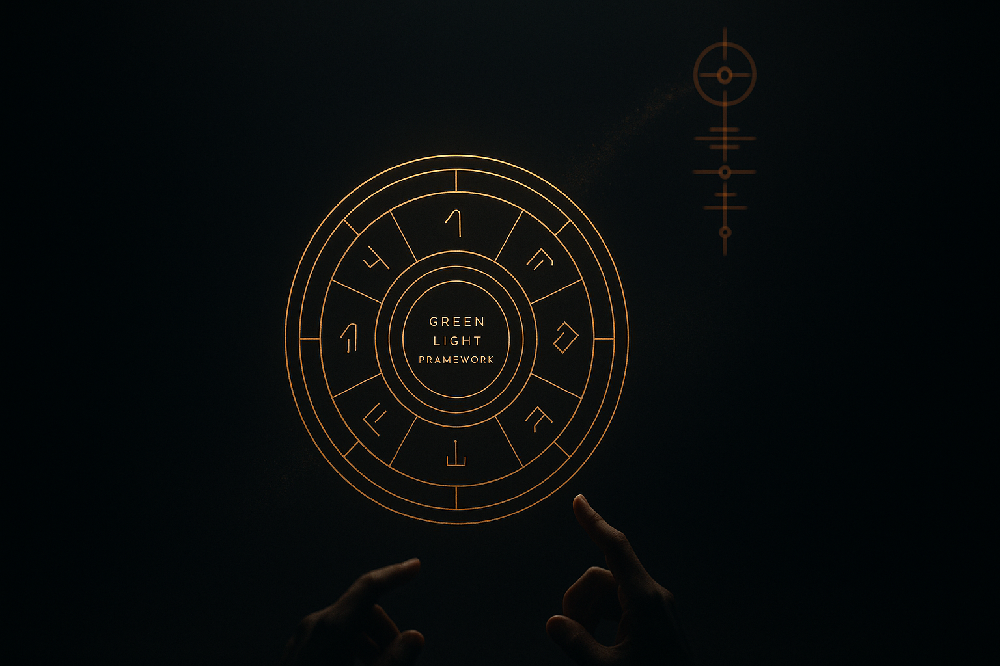
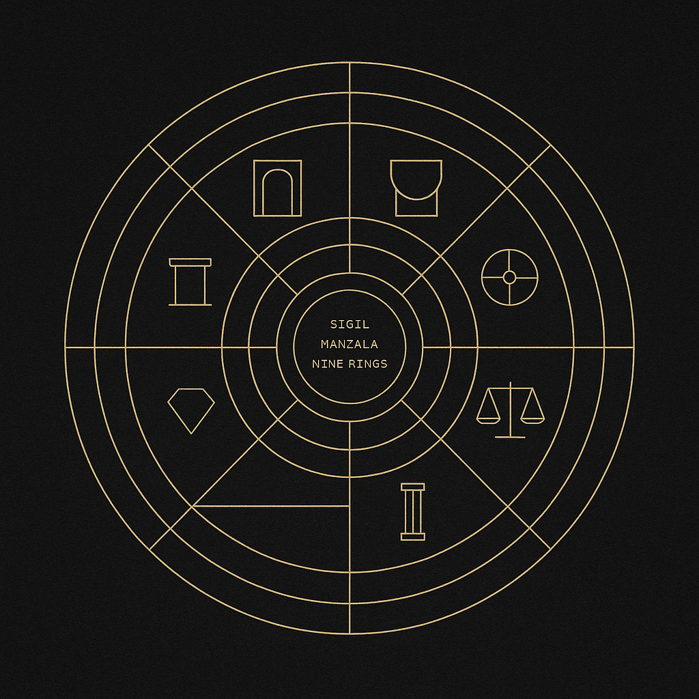
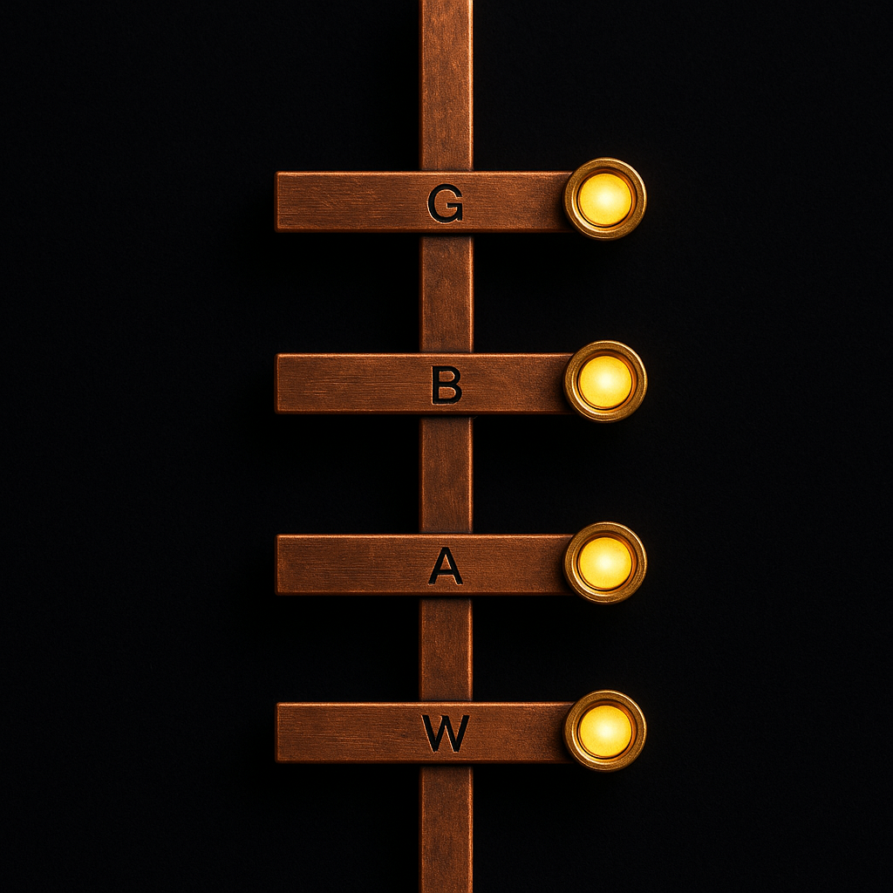

Innovation is disciplined ritual — the thesis that governs what can be summoned, and the apparatus that catches it when it arrives.
People think innovation is magic. I think innovation is ritual — which is the opposite. Magic suggests outcomes come from nowhere. Ritual insists outcomes come from geometry: the same gestures, performed with discipline, in the presence of forces you respect but do not pretend to fully control.

The laws that govern what can be summoned at all. Nine Steps, because ideas have structure. Six Archetypes, because the people who survive the work come in recognizable shapes. Three Portfolio Tiers — Sandbox Experiments & Research, Big Bet Projects, Established Business Units — because capital at different temperatures does different things.
A Green Light Framework because the decision to commit is itself a geometry: specific lines, specific conditions, specific ceremonies.
Volume I answers what do I build, with whom, funded how, why. Skip it and you are gesturing at air.

The thing you actually hold and use. Waitlist, Alpha, Beta, GA, not as marketing stages but as diagnostic strips — each one reads a different frequency of the signal. A retention cascade because the only honest measure of whether lightning struck is whether it stayed.
Activation discovery because the moment of conversion is the moment the circuit closes. Hound-dog signal mining because the instrument is deaf by default; you have to tune it, every time, on every product.
Volume II answers how do I run the experiment, read the result, know when to promote. Skip it and the geometry is decoration.
People think innovation is magic. I think innovation is ritual — which is the opposite.
Magic suggests outcomes come from nowhere. Ritual insists outcomes come from geometry: the same gestures, performed with discipline, in the presence of forces you respect but do not pretend to fully control. Lightning is real. You don't make lightning. You draw circles that make it legible, and you build instruments that catch it when it lands.
This manual is two volumes because the work has two irreducible parts.
Volume I is the sacred geometry. It is the thesis — the laws that govern what can be summoned at all. Nine Steps, because ideas have structure. Six Archetypes, because the people who survive the work come in recognizable shapes. Three Portfolio Tiers — Sandbox Experiments & Research, Big Bet Projects, Established Business Units — because capital at different temperatures does different things. A Green Light Framework because the decision to commit is itself a geometry: specific lines, specific conditions, specific ceremonies. Volume I answers what do I build, with whom, funded how, why. Skip it and you are gesturing at air.
Volume II is the ritual instrument. It is the apparatus — the thing you actually hold and use. Waitlist, Alpha, Beta, GA, not as marketing stages but as diagnostic strips — each one reads a different frequency of the signal. A retention cascade because the only honest measure of whether lightning struck is whether it stayed. Activation discovery because the moment of conversion is the moment the circuit closes. Hound-dog signal mining because the instrument is deaf by default; you have to tune it, every time, on every product. Volume II answers how do I run the experiment, read the result, know when to promote. Skip it and the geometry is decoration.
Neither volume stands alone. The thesis without the apparatus is a philosophy paper. The apparatus without the thesis is a dashboard nobody trusts.
Together they are a practice: draw the circle, then hold the instrument, then wait — disciplined, prepared, unafraid of boredom — for the strike.
Chance favors the prepared. That is not a slogan. That is the governing law of this entire manual. Prepared means two things, at once, in proportion.
Draw the circle. Catch the lightning.
Draw the circle. Catch the lightning.